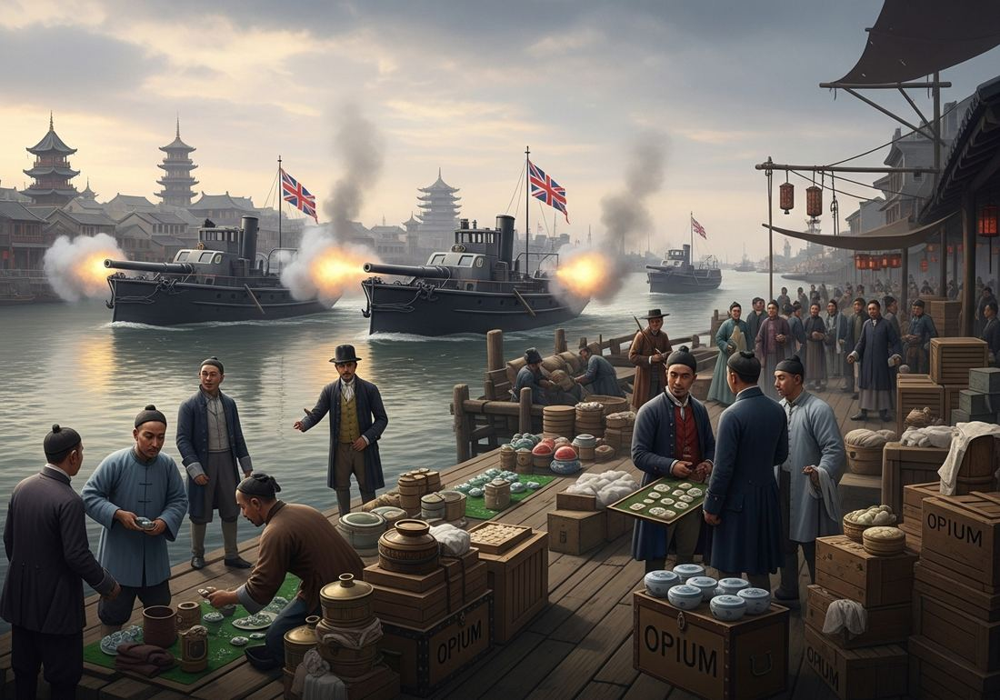

6.5 Economic Imperialism from 1750 to 1900
- LO-A: Economic imperialism, control without conquest: Industrialized nations didn’t always need to formally colonize a territory to dominate it economically. They used unequal treaties, foreign investment, debt traps, and “gunboat diplomacy” to control markets and resources while leaving local governments nominally in power. The Opium Wars and British investment in Argentina are the CED’s key examples (KC-5.2.I.E). The Opium Wars, forcing a market open: Britain illegally exported opium from India and the Middle East to China to correct a trade imbalance. When China’s emperor tried to stop the trade, Britain launched the First Opium War (1839–42), forcing China to sign the Treaty of Nanking: open treaty ports, extraterritoriality for British citizens, the cession of Hong Kong, and a massive indemnity. The Second Opium War (1856–60) brought France in and expanded the concessions. China was not formally colonized, but its economy was controlled by Western powers. Commodity trade and structural advantage: The trade in specific commodities, opium, cotton, palm oil, copper, was organized in ways that gave European and American merchants structural economic advantages (KC-5.1.II.C). British and French firms controlled the financing, shipping, and pricing of these commodities, capturing profits even when the actual production occurred elsewhere. Latin America, British economic empire without formal colonization: After Latin American nations gained independence in the early 19th century, Britain developed deep economic relationships without formal colonization. British firms built and owned Argentine railways. British banks provided loans. British investors owned meatpacking plants and port facilities. Argentina was politically independent but economically integrated into the British system, a model of “informal empire.”.
Try each question before revealing the answer.
1. Britain forced China to accept opium imports through war. Why would a government wage war to protect the right to sell a drug that was destroying the health of its trading partner’s population?
2. How is “economic imperialism” different from formal colonialism? Why might a powerful nation prefer economic imperialism over formal colonization in some cases?
3. What is “gunboat diplomacy” and why was it particularly effective in the 19th century?
4. British firms built and owned most of Argentina’s railway network in the late 19th century. How could this represent a form of economic imperialism even though Argentina was a politically independent nation?
5. Extraterritoriality, the right of British citizens to be tried in British courts rather than Chinese courts, was a key provision of the Treaty of Nanking. Why would this provision matter economically?
- Explain how various economic factors contributed to the development of the global economy from 1750 to 1900
Tap a term for its definition.
-
Definition: The extension of economic control by industrialized nations over politically independent nations through investment, debt, trade terms, and military threats, without formal colonization. Significance: Britain’s relationships with China and Argentina are the CED’s primary examples; demonstrates that formal political colonization was not necessary to achieve economic domination.
-
Definition: Two wars fought between Britain (and France in the Second Opium War) and China. First Opium War (1839–42): China tried to stop British opium trade; Britain won and imposed the Treaty of Nanking. Second Opium War (1856–60): expanded concessions further. Significance: Forced China into the unequal treaty system; symbolized Western economic imperialism in Asia; deeply shaped modern Chinese nationalism.
-
Definition: A treaty signed under military coercion that gave industrialized nations extraordinary privileges in non-industrialized nations, including extraterritoriality, forced market access, and indemnity payments. Significance: The Treaty of Nanking (1842) and subsequent treaties “opened” China’s market; similar treaties were imposed on Japan (1854), Korea, and other Asian nations.
-
Definition: The right of foreign citizens (especially Europeans and Americans) to be tried in their own nation’s consular courts rather than local courts. Established through unequal treaties. Significance: Gave Western merchants a legal advantage in Asian markets; prevented Chinese courts from applying Chinese law to British traders, deeply resented as a violation of sovereignty.
-
Definition: The use or threat of naval military force to compel political or commercial concessions from a nation that cannot militarily resist. Significance: Made possible by the industrial military technology gap; exemplified by British warships forcing open Chinese and Japanese ports; a core tool of economic imperialism.
-
Definition: Economic domination of politically independent nations through investment, trade, and debt rather than formal political colonization. Associated primarily with British economic relationships in Latin America. Significance: Britain controlled significant portions of the Argentine economy, railways, banks, meatpacking, without governing Argentina; demonstrates that “empire” can exist without formal political annexation.
-
Definition: A financial penalty imposed on a defeated nation, requiring it to pay war reparations to the victor. Significance: Unequal treaties forced China to pay enormous indemnities after the Opium Wars, straining Chinese government finances and increasing Chinese dependence on Western loans.
-
Definition: A Chinese port city opened to Western trade and residence by unequal treaties, where Western merchants lived under extraterritoriality and conducted business outside Chinese legal jurisdiction. Significance: By 1900, over 90 treaty ports existed in China; they became centers of Western commercial and cultural influence, and symbols of Chinese national humiliation.
🌏 What Is Economic Imperialism?
Formal colonialism, the kind described in Topic 6.2, where European governments directly ruled colonized territories, was expensive, administratively demanding, and sometimes met with fierce resistance. But industrialized nations didn’t always need formal political control to achieve their economic goals: access to markets, cheap raw materials, and investment opportunities.
Economic imperialism describes the extension of economic control over politically independent nations through investment, debt, trade terms, and the threat of military force. The CED identifies this pattern in KC-5.2.I.E: industrialized states and businesses within those states practiced economic imperialism primarily in Asia and Latin America. The two key examples are the Opium Wars in China and British economic domination of Argentina.
The AP exam also requires you to know KC-5.1.II.C: trade in some commodities was organized in ways that gave merchants and companies based in Europe and the U.S. a structural economic advantage. The commodities listed in the CED include opium (from the Middle East or South Asia, exported to China), cotton (from South Asia and Egypt, exported to Britain), palm oil (from sub-Saharan Africa, exported to Europe), and copper (from Chile). Know these pairings.
😮 The Opium Wars: Forcing a Market Open
The Opium Wars are the most dramatic example of economic imperialism in 19th-century Asia, and they profoundly shaped modern Chinese national identity. To understand them, you need to understand the trade problem they were designed to solve.
In the early 19th century, Britain imported enormous quantities of Chinese goods, tea, silk, porcelain, but China had little interest in British manufactured goods. Chinese consumers preferred Chinese products. The result was a structural trade imbalance: British silver was flowing to China, which was economically draining for Britain. The East India Company found a solution: opium, grown in British India (and the Middle East). Chinese demand for opium was enormous and growing, by the 1830s, millions of Chinese were addicted.
The problem was that opium importation was illegal in China. In 1839, the Chinese emperor appointed Commissioner Lin Zexu to suppress the trade. Lin confiscated and destroyed over 20,000 chests of British opium at Canton and famously wrote a letter to Queen Victoria asking her to stop: “Let us ask, where is your conscience? I have heard that the smoking of opium is very strictly forbidden by your country.” Britain responded by launching the First Opium War (1839–42). Chinese forces were no match for British naval firepower. The war ended with the Treaty of Nanking (1842): Britain got Hong Kong, five open treaty ports, extraterritoriality, and a massive indemnity. China was forced to continue accepting opium.
The Second Opium War (1856–60) brought France in alongside Britain and expanded the unequal treaty system: more ports opened, more concessions granted, and the opium trade legalized. By 1900, over 90 treaty ports existed in China. Western powers each carved out “spheres of influence” where their citizens lived under extraterritoriality and their companies operated without Chinese legal oversight.

The Opium Wars (1839–42, 1856–60): British gunboats forced China to accept opium imports and sign unequal treaties that opened Chinese markets to Western commercial domination (Google Gemini, 2025), commercially licensed. The Opium Wars (1839–42, 1856–60): British gunboats forced China to accept opium imports and sign unequal treaties that opened Chinese markets to Western commercial domination (Google Gemini, 2025), commercially licensed.
🇬🇧 Britain in Latin America: Informal Empire
Latin American nations gained independence from Spain and Portugal in the early 19th century, but political independence did not mean economic independence. Britain, the world’s leading industrial and financial power, moved rapidly to establish deep economic relationships with the newly independent states. The CED specifically mentions the construction of the Port of Buenos Aires with the support of British firms as an illustrative example of economic imperialism.
The scale of British economic involvement in Argentina was extraordinary. British firms built and owned most of Argentina’s railway network, which was designed to move beef and grain from the pampas to the coast for export to Britain, not to serve Argentine internal development. British banks provided loans to the Argentine government. British meatpacking companies built and operated the refrigerated plants that processed Argentine beef. British investors owned utility companies, dock facilities, and telegraph lines.
Argentina was politically independent, but economically it was deeply integrated into the British imperial system. When Britain experienced financial crises, it affected Argentine credit. When British consumers wanted beef, Argentine ranchers prospered; when demand fell, Argentine economies suffered. Historians call this relationship informal empire: the economic substance of imperialism without the legal form of colonization. Argentina’s experience was replicated across Latin America. Chile (copper and nitrates, British and later American investment), Brazil (coffee, British and American capital), Mexico (silver and oil, American investment).
⛏️ Copper, Cotton, and Commodity Advantage
Beyond opium and the Latin American informal empire, the CED identifies two additional commodity examples where trade was organized to give Western merchants structural advantages:
- Cotton grown in South Asia and Egypt: As discussed in Topic 6.4, Indian and Egyptian cotton was exported to British mills. British merchants controlled the financing, shipping, insurance, and pricing of this trade, capturing the commercial profits even while the physical production occurred in India and Egypt. Indian and Egyptian farmers received commodity prices set by British buyers; British textile manufacturers and merchants captured the manufacturing and commercial profits.
- Copper extracted in Chile: Chilean copper mining expanded rapidly in the 19th century, driven by industrial demand for copper wire (essential for telegraph and later electrical systems). British and later American firms provided capital, technology, and market connections. Chilean copper was priced and sold in London markets where Chilean producers had little bargaining power. The structural pattern mirrors the other examples: non-industrialized producers captured raw material prices; industrialized buyers and merchants captured the higher-value processing and commercial profits.
These videos will help you review Economic Imperialism from 1750 to 1900 and solidify key concepts before your exam.
- China is willing to negotiate a new trade agreement that would include opium if Britain compensates China for its harmful effects
- Britain and China should resolve the opium dispute through an international arbitration process
- The Qing Dynasty’s inability to stop opium smuggling reflects the weakness of Chinese imperial governance
- Britain’s own moral standards, which prohibit opium at home, oblige it to stop exporting opium to China
- It was signed in a foreign language (English) that Chinese negotiators could not read
- It imposed obligations on China without providing equivalent benefits or protections to Chinese citizens in Britain
- It established a permanent British military presence in China that violated Chinese territorial sovereignty
- It required China to adopt the British legal system throughout the country
- A formal colonial relationship in which Britain governed Argentina as part of the British Empire
- A mutually beneficial trade partnership in which both nations contributed equally to economic development
- Economic imperialism, in which British investment gave Britain structural economic control over a nominally independent nation
- An example of settler colonialism, in which British migrants permanently relocated to Argentina
- The way trade in certain commodities was organized to give European merchants and companies a structural economic advantage (KC-5.1.II.C)
- A fair trade system that compensated African producers for the full value of their agricultural labor
- The transition from slave labor to free labor in West African export agriculture
- An example of direct colonial extraction in which the British government controlled palm oil production
- Economic imperialism led directly to the industrialization of China as foreign investment stimulated manufacturing
- Unequal treaty obligations created fiscal dependency that reduced the Chinese government’s capacity to govern and develop the country independently
- Western banks provided loans to China on favorable terms to support Chinese economic development
- The Chinese government used indemnity payments as an opportunity to reform its tax collection system
Answer parts A, B, and C. Each requires a separate short response. Do not write a full essay.
Part A
Briefly describe ONE specific way Britain practiced economic imperialism in China in the period 1839–1900.
Part B
Briefly explain ONE way economic imperialism differed from formal colonial rule (as discussed in Topic 6.2).
Part C
Briefly explain how the trade in one specific commodity (other than opium) gave European merchants a structural economic advantage in the period 1750–1900 (KC-5.1.II.C).
Write a full essay with a thesis, contextualization, evidence, and historical reasoning. Use comparison or argumentation as your primary skill. A strong response will make a clear claim about the relative significance of economic vs. formal imperialism with specific evidence for both.